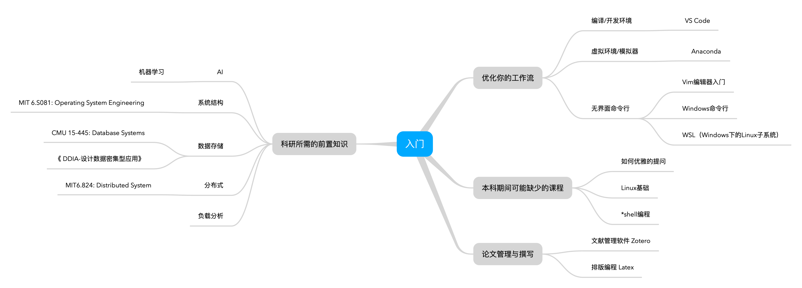

新人指引
学习路线图

基础知识
以下是进行科研之前需要掌握的基础知识，这些知识/概念/技术都是会频繁出现在后续的科研工作中的。
学会提问
在学习和工作的过程中，遇到问题-寻求解决方案-解决问题是一种常见的模式，但是在提问之前，你需要知道如何提问才是健康有效的。
到哪里搜寻答案？
| 搜索引擎 | 百科 | 问答网站 | |
|---|---|---|---|
| 推荐使用 | wikipedia | stackoverflow 偶尔知乎 |
|
| 不推荐使用 |
一般来说，计算机相关的问题，很难找到优质的中文资料，而baidu的英文搜索能力是远远比不上google的
wikipedia vs 百度百科 ?
英文维基百科比中文维基百科和百度百科包含更丰富的内容. 为了说明为什么要使用英文维基百科, 请你对比词条
前束范式分别在百度百科, 中文维基百科和英文维基百科中的内容.stackoverflow是一个程序设计领域的问答网站, 里面除了技术性的问题(What is ":-!!" in C code?)之外, 也有一些学术性'Is there a regular expression to detect a valid regular expression? 和一些有趣的问题(What is the “-->” operator in C++?).
如何优雅的提问？
在你准备要通过电子邮件、新闻群组或者聊天软件向特定的人或者群体提出技术问题前，请先做到以下事情：
- 尝试在你准备提问的论坛的旧文章中搜索答案。
- 尝试上网搜索以找到答案。
- 尝试阅读手册以找到答案。
- 尝试阅读常见问题文件（FAQ）以找到答案。
- 尝试自己检查或试验以找到答案。
- 向你身边的强者朋友打听以找到答案。
- 如果你是程序开发者，请尝试阅读源代码以找到答案。
当你提出问题的时候，请先表明你已经做了上述的努力；这将有助于树立你并不是一个不劳而获且浪费别人的时间的提问者。如果你能一并表达在做了上述努力的过程中所学到的东西会更好，因为我们更乐于回答那些表现出能从答案中学习的人的问题。
当你做到了以上几点，仍然无法解决你所遇到的问题的时候，恭喜你，从某种意义上来说，你成功找到了一个大家都乐于探讨的问题，接下来，你可以参考以智慧的方式提出你的问题
Linux基础
到了Master阶段往后至参加工作，你最常打交道的操作系统绝对是Linux，Linux的操作也是公认的，国内外大部分高校缺乏的课程。 如果你是Linux的纯小白，或者是很久没有操作过Linux系统了，强烈建议阅读
使用Windows电脑？
- 在物理机上直接安装Linux系统（推荐）
- 真机的稳定性会比虚拟机相对高一些(比如crash consistency之类的).
- 真机的性能会比虚拟机相对高一些
- Debian(Linux发行版之一)官方安装指引(如果是第一次接触安装请备份好你的数据)
- WSL（在Windows上运行Linux）
*shell 编程
作为和数据打交道的学生，学会一门处理数据的脚本语言是非常关键的，尽管如今大部分情况下我们都是通过python脚本在处理数据，但是 shell 脚本依然在某些时候具备其特有的优势。例如
- 批量执行参数不同的实验
- 与操作系统直接交互的进程/线程处理
- 输入输出流的自定义
等等，这些可能直接用shell编程来完成比较合适，最重要的是，你至少得大致看得懂.sh可执行文件的内容，因为目前还是有非常多的软件/工具/交互方式是通过shell脚本提供的。
感兴趣的话，可以参阅Shell
Scripting Tutorial
软件/环境
VS Code
Anaconda
git&github
科研工具
“工欲善其事，必先利其器”，现代科研有了非常多方便、科学的工具帮助，熟悉使用这些工具，然后养成你自己良好的科研习惯。